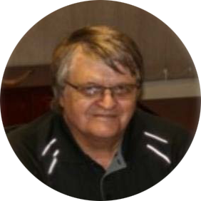
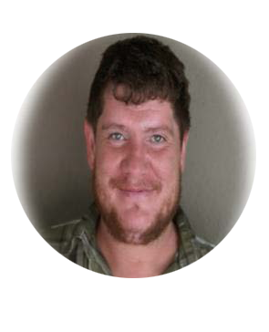

Johannes Welhelmus Putter
CEO
Pr. QS 1106 SACQSP, PMAQS Johannes Welhelmus Putter graduated from University of Free State ( with a BSc Quantity Surveying 4 years) degree He is also a registered Professional Quantity Surveyor with over 40 years’ experience in the field Mr Putter is the founder and the current CEO for JCNP ( Pty)Ltd.

Van Heerden Botha
Technical Director QS Department
ASAQS Member
VannHeerden Botha has 14 years’ experience within the built environment, possessing a certificate in Quantity Surveying, Construction Management and Project Management (from University of Free State ) VHB is
currently serving as Technical Director and is a
JCNP shareholder
Etricia Dreyer
Finance and HR Director
Etricia is the Chief Financial Officer and Human Resources Manager, with financial and administration training and
qualifications, and has over 20 years’ experience workingin finance, administration and HR
Mimi Mokoena
Technical Director Engineering Department
SACNSP Member
Mimi completed a B Sc degree in Geochemistry 2009 majoring in Geochemisty Geology andChemistry, B Sc Geohydrology 2010 and MSc Geohydrology 2012 at the University of the Free State. She is a member of at the South African Council for Natural Scientific Professions, a member of the International Association of hydrogeologists, Water Institute of Southern Africa and the Geological Society of South Africa. She is currently an MBA Candidate that has recently acquired FinancialAnalysis and Modelling certificate at UCT She is a JCNP shareholder and Director.